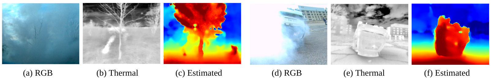

Hardware setup
We designed a data collection platform comprising a pair of stereo thermal cameras, a LiDAR, and an inertial measurement unit (IMU), as illustrated in the diagram below. These sensors are mounted on an unmanned aerial vehicle (UAV) platform, which supports data collection during handheld experiments and UAV flights. The stereo thermal pair is oriented in a forward-facing direction with a 24.6 cm baseline, and the LiDAR is positioned on top of the UAV. An onboard NVIDIA® Jetson AGX Orin™ computer is connected to the sensors. To ensure clarity in interpreting the orientation and relative positioning of the sensors, we provide a diagram detailing the coordinate systems for each sensor, which is crucial for subsequent sensor fusion and data processing.

Sensor specifications are presented below. For the FLIR Boson thermal cameras, we capture the raw-16-bit data, as it retains detailed temperature information that is lost in 8-bit RGB formats.
Data Collection
- Camera-IMU calibration: Kalibr with heated checkerboard target.
- LiDAR SLAM: Faster-LIO.
- Pipeline: LiDAR scans -> Scene reconstruction -> Projection to image frame -> Occlusion handling & Filtering.

Data Description
Quantative: The processed FIReStereo-sUAS dataset contains 150,579 stereo thermal images total across all environments. 39% are in urban environment, 21% are in mixed environment, 40% are in wilderness environment with dense trees. 84% of the images were collected in day-time and the rest were during night-time. Obstacles were measured at a median depth of 7.40 m which is a typical range for UAS obstacle avoidance. 48% stereo thermal pairs are smokeless, while 52% contain smoke. Of the smokeless images, we label 35,706 with depth-map pairs annotated from LiDAR and Faster-LIO.
Qualitative: The Hawkins experimental sequences feature scenes of dense forests and urban structures. The data were collected during the day with cloudy and windy conditions. (YL: should we include below details?)
- Sequence 1-2: Features dense trees and branches with varying thickness.
- Sequence 3: Captures views of a thin pole, trees, and buildings representing typical urban obstacles that a UAS might face in response to a wildfire disaster.
- Sequence 4: Contains views of a car, pole, and distant trees.
- Sequence 5: replicated a disaster scenario of an upside-down car engulfed in dense smoke.
The Frick experimental sequences were recorded during the night and under rainy conditions. The captured temperature range for these sequences is much lower and is evident from the darker thermal images. These sequences feature bare trees in varying sparsity, vehicles, poles, roads and buildings.
Gascola sequences were recorded in heavily degraded wilderness, featuring dense smoke, night-time, dense trees and bushes. These conditions were chosen to simulate the wildfire disaster response scenario in which the UAS must navigate through a cluttered forest environment with extreme visual degradation. We show that depth estimation models trained on smokeless data is able to generalize to these smoke-filled data.
The figure below shows the variety of environments spanning urban settings, sparse trees, and dense trees.
(YL: todo prescribed fire thermal)
Evaluation
We implemented 5 representative stereo depth estimation models to evaluate the capabilities of our new dataset in facilitating robust depth estimation for UAS navigation in cluttered environment. More details and quantative results can be found in the paper.
- Lightweight networks: Fast-ACVNet, MobileStereoNet
- 3D networks: AANet, GWCNet, PSMNet
Fast-ACVNet is used to generate qualitative results, as it is best suited for running on a low Size, Weight, Power, and Cost (SWaP-C) system while maintaining similar performance to the more resource-intensive models. We observe the model trained on our dataset is now able to estimate depth for outdoor thermal images with challenging objects such as thin tree branches and poles. (YL: wording?)

We further evaluate the trained model on unseen environment with highly dense smoke conditions. Results show than the model trained on smokeless data is able to generalize to these smoke-filled environments.
